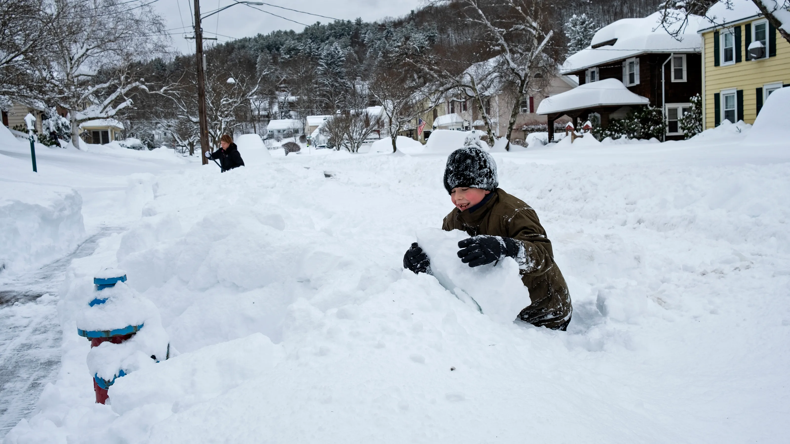

As you can see
here, there are many different kinds of scenery
and in these examples you see a a mountain topped by a wooden
cross, a beautiful treeline view, and a few buildings that are surrounded
by a shoreline view.
#2
#3
Images
#1

In these pictures you can clearly see a beautiful snow day
filled with joy and it makes you think about the fun things that happen
around winter time.